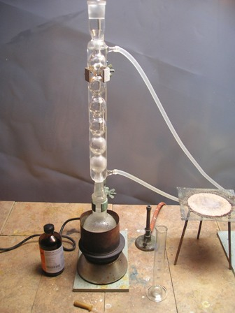
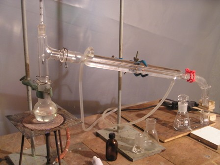

Oggi propongo fast food, un piatto di chimica secca e veloce, niente commenti, niente divagazioni!
Ritorniamo a parlare degli esteri odorosi (non sto a ripetere cos'è un estere!), dove stavolta l'alcool è il benzilico: ho inaugurato la sua esterificazione con la sintesi dell'acetato di benzile. Seguiranno le preparazioni degli omologhi inferiore e superiore, cioè il formiato ed il propionato di benzile.
Il metodo è sempre Fischer, ma l'esterificazione di un alcool aromatico è molto più lenta e va condotta a temperatura più alta, anche se è ancora perfettamente attuabile.
Ho preso spunto da una procedura consolidata, modificandola poi nel metodo di lavaggio/estrazione ottenendo un buon prodotto e una resa migliore (al prezzo di procedura lunga e con tempi morti, ma che ho impegnato in altre cose).

Materiale occorrente:
- alcool benzilico C6H5-CH2-OH
- acido acetico CH3-COOH
- acido solforico
- refrigerante allhin
- vetreria varia

- In un pallone da 250 ml introdurre 30 ml di alcool benzilico e 43 ml di acido acetico glaciale; mescolando aggiungere 1,5 ml di H2SO4 concentrato e predisporre il sistema per riscaldamento a ricadere con mantello riscaldante o con bagno ad olio o sabbia. Io uso questo sistema quando il riscaldamento va per le lunghe (ed è proprio questo caso!).Portare ad ebollizione e tenere a lento riflusso per una decina di ore; la temperatura si assesta mediamente sui 170°, all'inizio più bassa e con maggior ebollizione, alla fine, quando l'estere si è formato in maggior quantità l'evaporazione è molto minore.
Alla fine della giornata (!) versare la miscela in 200 ml di acqua e lasciar riposare una notte.
La differenza di densità dell'acetato di benzile con l'acqua è piccola (d. 1,05) e quindi esso tende ad emulsionarsi e si separa molto lentamente.
Dopo la separazione, decantare cautamente il liquido sovrastante, aggiungere 100 ml di una soluzione satura di NaHCO3 e mescolare fino a neutralizzazione completa dell'acidità residua. Lasciar ancora separare (questa volta è un po' più veloce) e lavare bene un altro paio di volte con acqua, sempre con le pause opportune per la separazione delle fasi.
Come detto, la procedura di lavaggio è lunga ma evita di dover estrarre con solvente (CCl4 o etere) e poi separare a sua volta l'estere dal solvente.
Col mio sistema si usa solo acqua e si lava perfettamente senza perdite.
Alla fine separare dall'ultima acqua con imbuto separatore e seccare con 5 g di CaCl2.
Si deve ottenere un liquido perfettamente limpido (se è leggermente lattiginoso contiene ancora umidità).
Distillare il prodotto (circa 50 ml) raccogliendo tra 212 e 218°, ottenendo 28 ml di benzile acetato puro (resa 67%).

Il residuo della distillazione è più altobollente e leggermente giallino ed ha quasi identico profumo.
D. 1,05 - P.e. 213-215°- Liquido limpido incoloro con forte odore aromatico, è un costituente dell'essenza di gelsomino ed ha nota fruttata come di lampone, anche se le sensazioni odorose come ben sappiamo sono fortemente soggettive; è anche naturalmente sbagliato associare il profumo, per esempio di un fiore o di un frutto (prodotto dalla mescolanza di decine di composti diversi), a quello di una sostanza singola di sintesi.
3 commenti